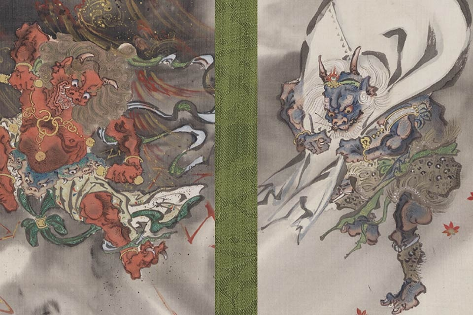

-
Spy X Family Vol. 2
Just arrived
Our popular UT collection based on TV anime SPY x FAMILY
returns! Designs feature each family member as they hide
their true identity. -
UT Archive One Piece / Naruto
Revisit some of our favourite UT designs from One Piece
and Naruto collections from seasons past!
-
Japanese Art from the Museum of Fine
Arts, BostonDiscover a collection of Japanese masterworks from the

Museum of Fine Arts, Boston. -
The Philosophy of Andy Warhol
This collection features inspiring quotes by Warhol that
embody the visionary artist's legacy.